iTest User's Guide
CycleManager Application Notes
Product Version 4.5
Prepared By
ADT Software Engineering
A&D Confidential Document Distributable only to A&D Customers
Copyright A&D Company, Limited
A&D Technology Inc.
This document contains Cycle Manager application notes for the Universal Transient Test. Regression formulas are obtained from the Electronic Code of Federal Regulations. In January of 2015, the Cycle Manager code was updated to reflect the new Maximum Test Speed calculations under CFR 1065.610 - 2014.
Passing “DEBUG” on the command line enables the output of the arrays used during calculations.
Run CycleManager in background to generate .sc2 output file.
This command is optional, but must be used with the /autosc2. It puts the status of file generation into the status channel:
Where:
File Generation Status Descriptions
| Value | Description |
| 0 | Success |
| -1 | Failed to generate the .sc2 output file. |
| -2 | The .sc2 was generated, however, only one peak can be found in the power curve, indicating that the data in the .sc2 file may be incorrect. |
Cycle Manager uses the CycleManager.ini file to maintain user options and allow programmatic initialization of the interface. Selected sections of the .ini file entries are described in the table below.
CycleManager.ini File Values and Descriptions
| First Column | Second Column |
| Cycle Manager Section | |
| ActiveMode | For future use, this enables programmatic control of which interface to load upon startup. |
| Channel Configuration Section | |
| Contain the form entered channel name mapping variables. | |
| UniversalTransientTest | |
| txtReportFilename | Update this entry with the name of the desired report filename. |
| txtNormalizedFilename | Update this entry with the name of the desired Normalized file before running the application. |
| txtOutputFilename | Update this entry with the desired output filename before running the application. |
| txtPreviousFilename | Update this entry with the appropriate data file before running the application. |
| txtMapFilename | Update this entry with the appropriate powermap file before running the application. |
| FileDelimiter | Comma/Tab - this setting defines the format of the ouput file. |
| OutputFileHeader | Setting used to determine if the header should be included the output data or saved separately. |
| Baro | Update this entry with the current barometer value before running the application. |
The Channel Configuration Editor enables you to configure the application's channel mapping. Channel names entered are used to obtain information from the supplied files. You can access the Channel Configuration dialog via the configuration menu item.
Channel Configuration Dialog
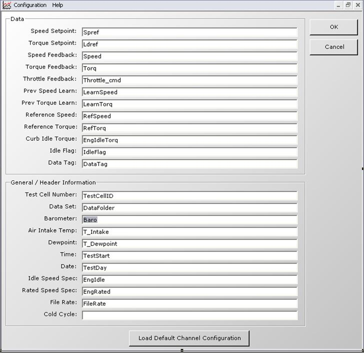
Power Map Analysis
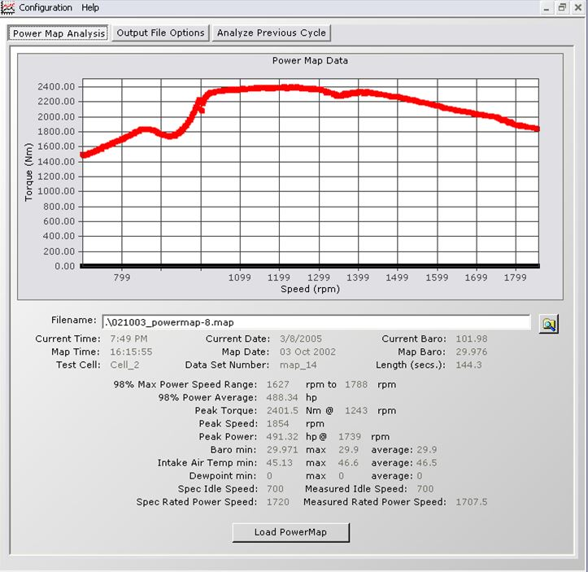
To denormalize a normalized curve, a TCG power map file must be created. The following sections detail the optional and required items used to map this file:
These items are located in the header and use the following format:
Syntax:
ParameterName=ParameterValue
Example:
IdleSpeedSpec=600
This button loads the selected powermap file.
Output File Options
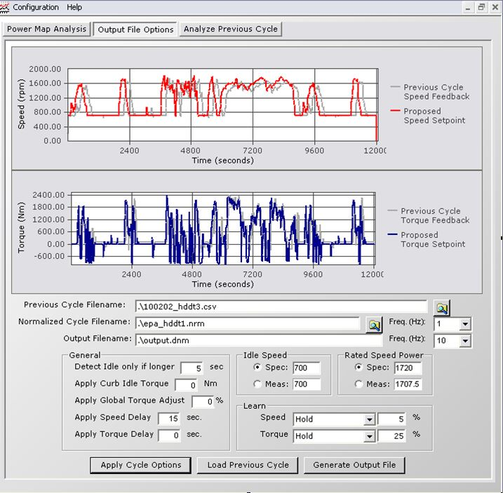
HEADER ITEMS (Required)
File Rate (Hz)
Cold Cycle (True / False): analysis routine uses this to determine which criteria to apply.LOGGED ITEMS (Required)
Reference Speed – This is the reference speed used to compare the feedback to
Reference Torque – This is the reference torque used to compare the feedback toSpeed Feedback
Torque Feedback
Throttle Feedback
Previous Speed Learn – Speed learn value from the last learning cycle
Previous Torque Learn – Torque learn value from the last learning cycle
The following table describes the output file options and their descriptions.
Output File Description
| Option | Description |
| File Delimiter | Cycle Manager reads this setting from the INI file and will either output the file in a comma separated or tab separated format. |
| Output File Header | Cycle Manager reads this setting from the INI file. A setting of FALSE will generate two output files, one file for the header information with an .ini extension and the other file contains the table information. |
| Normalized File Format | The Normalized file must contain a table of percent speeds and loads. The first line of the file contains the Column Titles and must have “Time”, “Speed” & “Torque” as the column title names. The second line of the file contains the Column Units, this line is not used by Cycle Manager. The remaining lines in the file contain the data for denormalization. Refer to the example below. |
| Curb Idle Transmission Torque | This section is for Curb Idle Transmission Torque. It is used to simulate engine loading in a vehicle equipped with an automatic transmission. If enabled, the value of torque in the window below is applied to the engine at idle points. |
| Torque Delay/Speed Delay | If enabled, this setting applies a time shift during generation of the denormalized arrays. Positive entries cause a “backwards in time” shift, resulting in setpoints issued earlier. |
| Torque Shift Adjust | Torque Shift Adjust increases or decreases the torque setpoint by a fixed percentage when the Setpoint arrays are generated. This is useful when feedback tracks the setpoint in time but not in magnitude. |
| Mode Switch | For most of the test the dyno runs in speed control. At idle points, it is better to run the dyno in torque control. The entry here specifies how long an idle state must be before mode switching will occur. This balanced idle state results in run-time overhead. |
Example:
Time,Speed,Torque s,%,% 1,0,0 2,0,0 3,0,0 4,0,0 5,0,0 6,0,0
Learn Options and Description
| Option | Description |
| Learn | The amount of learning is selected by choosing ‘Apply % Learn’ and entering a percentage value. If a previous learn was used and you want to keep it the same, select Hold. If you want to reset the learn to zero, select Reset. |
| Reset | Resets the Learn arrays to zero; no Learn is applied when arrays are generated. This is the default setting when Cycle Manager is loaded. Update the screen if Learn was previously applied. |
| Hold | Maintains the previous percentage of Learn, regardless of the entries in the % entry fields. |
| Apply & Learn | Causes the value in the % boxes to be applied to the error between reference and feedback. The resulting values are saved to the Learn arrays and added to the setpoint when those arrays are generated. |
 |
WARNING: | In order for the learning function to work correctly, the newly created arrays must have the same shift as the previous arrays. This ensures the learning is applied to the correct values. |
Previous Cycle Analysis
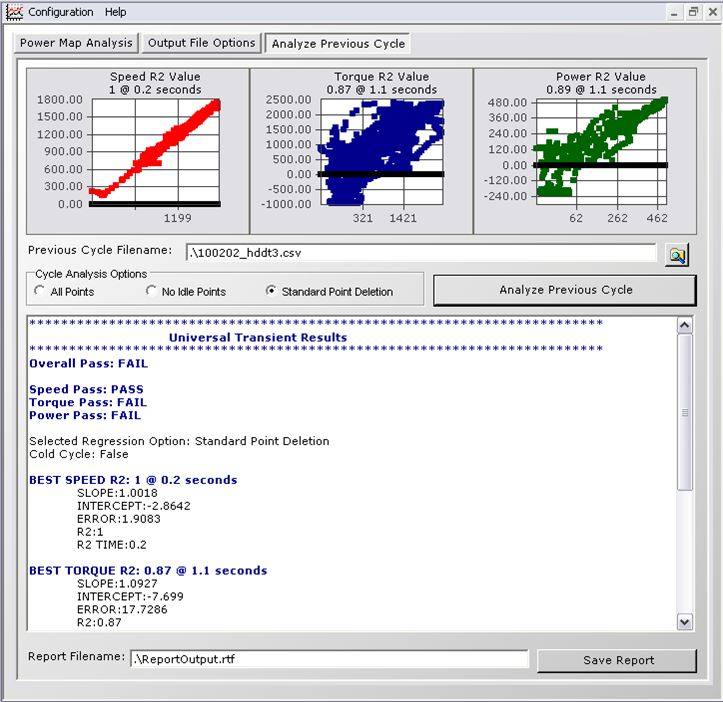
Report components:
ABSOLUTE (Intercept) > 50 = FAIL Slope < 0.97 –or- Slope > 1.03 = FAIL R2 > 0.97 = FAIL Error > 100 = FAIL
ABSOLUTE (Intercept) > 20.33 = FAIL Error > Previous Cycle Max Torque * 0.13 = FAIL COLD: Slope < 0.77 –or- Slope > 1.03 = FAIL R2 > 0.85 = FAIL HOT: Slope < 0.83 –or- Slope > 1.03 = FAIL R2 > 0.88 = FAIL
ABSOLUTE (Intercept) > 3.728 = FAIL Error > Previous Cycle Max Power * 0.08 = FAIL COLD: Slope < 0.87 –or- Slope > 1.03 = FAIL R2 > 0.91 = FAIL HOT: Slope < 0.89 –or- Slope > 1.03 = FAIL R2 > 0.91 = FAIL
The algorithm implemented in CycleManager is the least square linear regression.
A least-squares regression slope, 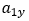, is calculated as follows:
Slope Formula
Example:
Slope Example
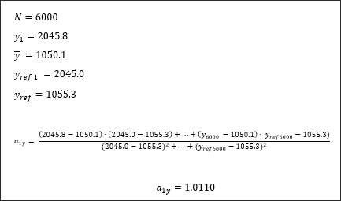
A least-squares regression intercept,  , is calculated as follows:
, is calculated as follows:
Intercept Formula
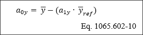
Example:
Intercept Formula
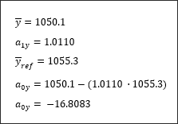
The standard estimate of error, SEE, is calculated as follows:
Standard Estimate of Error Formula
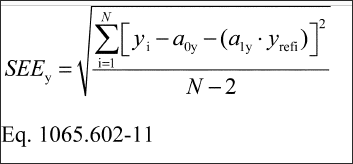
Example:
Standard Estimate of Error Example
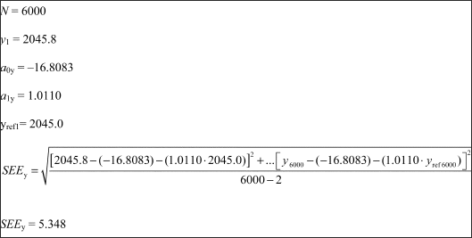
The coefficient of determination, 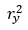, as follows:
Coefficient of Determination Formula
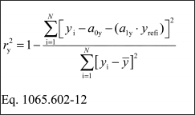
Examples:
Example 1
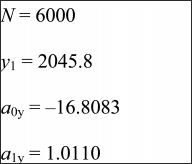
Example 2
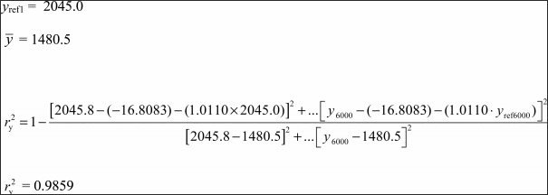
The denormalization of engine speed is calculated through the following formula:
Denormalization of Engine Speed Formula
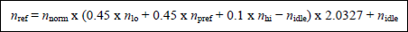
Variable Descriptions
| Variable | Description |
| nnorm | The normalized speed divided by 100. |
| nlo | The lowest speed where the power is 55% of the maximum power. |
| npref | The engine speed where the integral of the maximum mapped torque is 51% of the whole integral between nidle and n95h. |
| nhi | The highest speed where the power is 70% of the maximum power. |
| n95idle | The idle speed. |
| n95h | The highest speed where the power is 95% of the maximum power. |
| nPmax | The max power speed. Refer to the Replacement Process section for more information. |
In the events where the nhi and n95h values are not available, the following provisions apply: